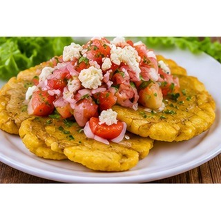

Reseña del cantón
Valencia es un cantón del norte de Los Ríos conocido por sus extensas zonas agrícolas y paisajes verdes. En su economía destacan cultivos como banano, cacao, palma y cítricos, además del comercio de productos del campo. Su ubicación facilita la comunicación con otros cantones de la provincia. La vida comunitaria conserva costumbres rurales y celebraciones populares.
Población
51.509 habitantes (Censo de Población y Vivienda 2022).
Parroquias
Valencia (cabecera cantonal), La Unión y Nueva Unión.
Economía y cultura
La agricultura impulsa buena parte del movimiento económico local y conecta al cantón con mercados de otras localidades. Sus comunidades rurales mantienen costumbres relacionadas con la cosecha, la cocina y la vida en familia.
Alcalde
Daniel Macías López — período 2023–2027.
Fuente: Directorio oficial de alcaldes y alcaldesas de AME.
Platos típicos
Patacón pisao, hornado y tilapia frita.

Estas preparaciones se documentan como parte de la gastronomía local. Su disponibilidad y preparación pueden variar entre comunidades.
Lugares turísticos
Ríos, cascadas y balnearios naturales de la zona; permiten disfrutar de actividades recreativas y del paisaje.
Mapa del cantón
Mapa de Google Maps centrado en el cantón: